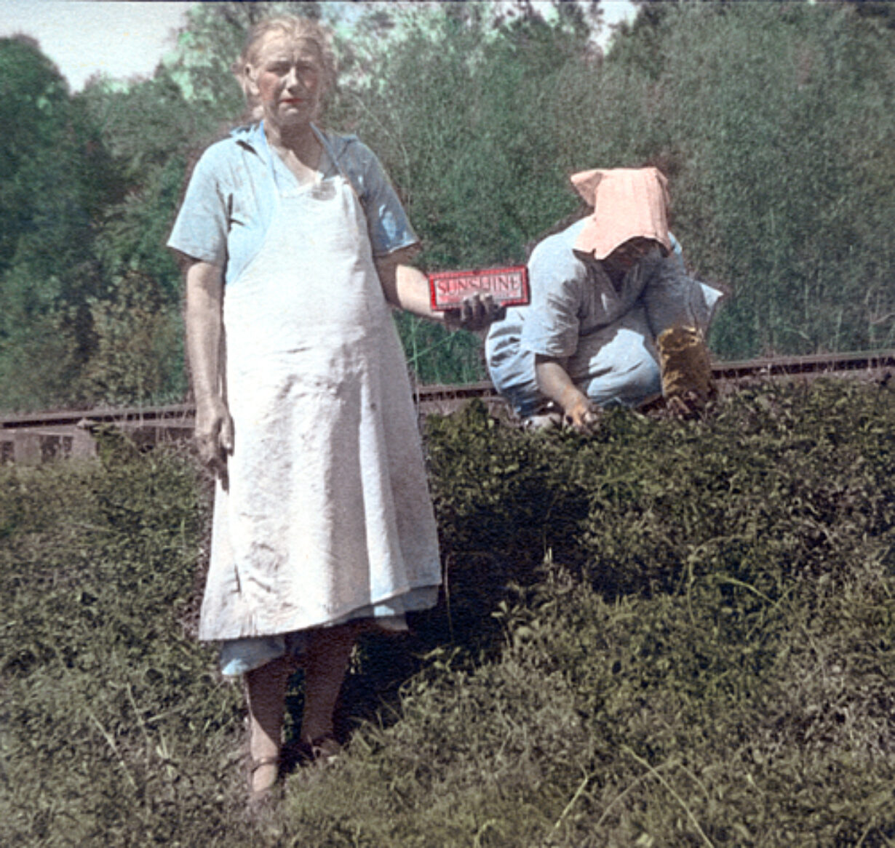
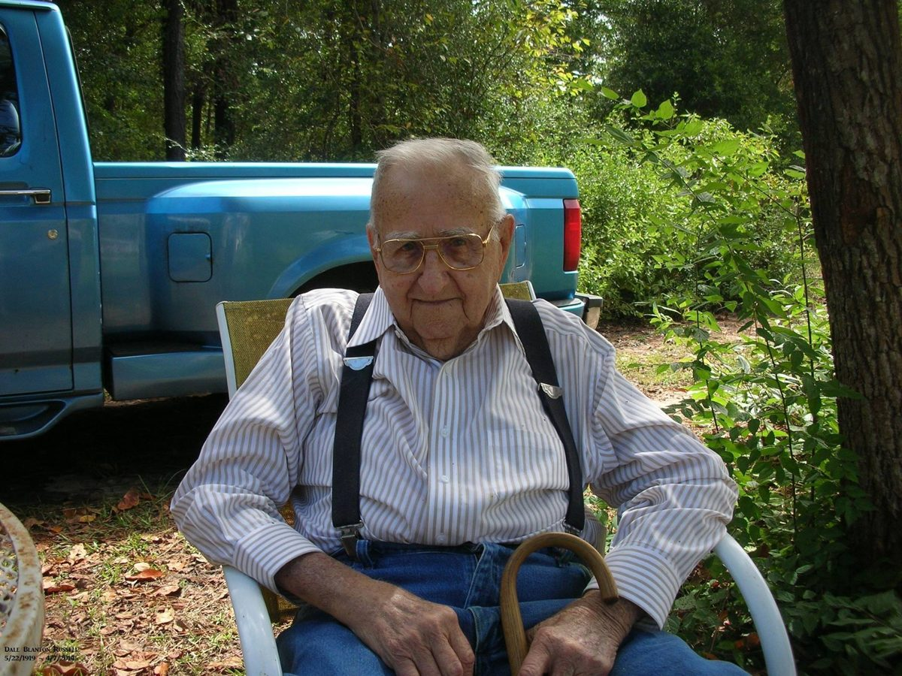
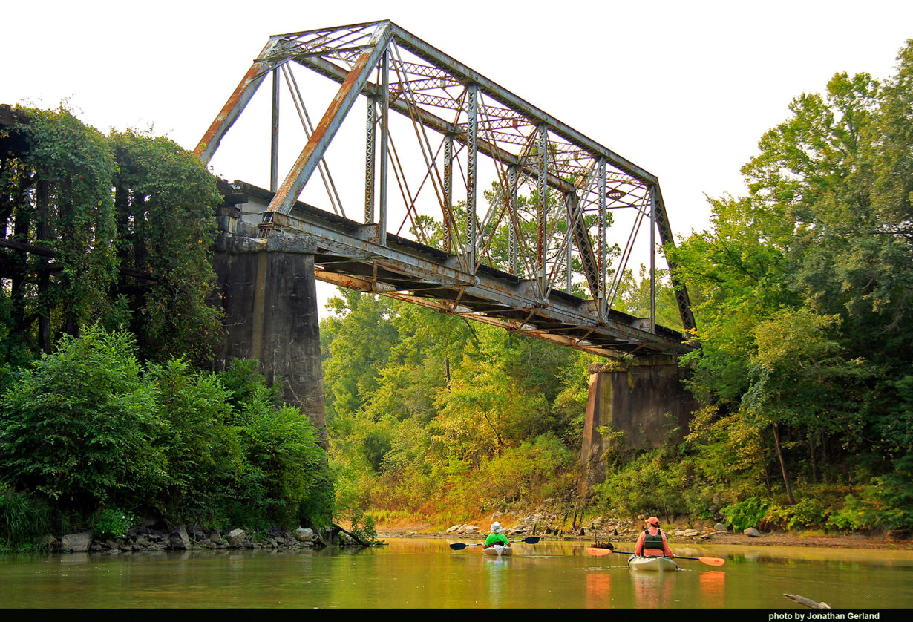
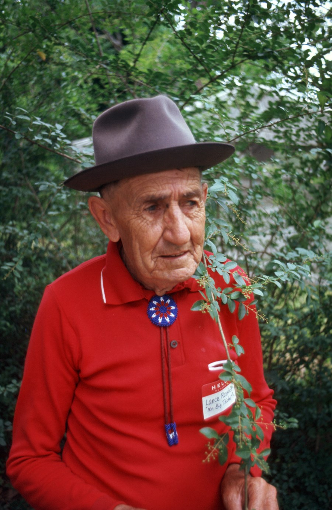
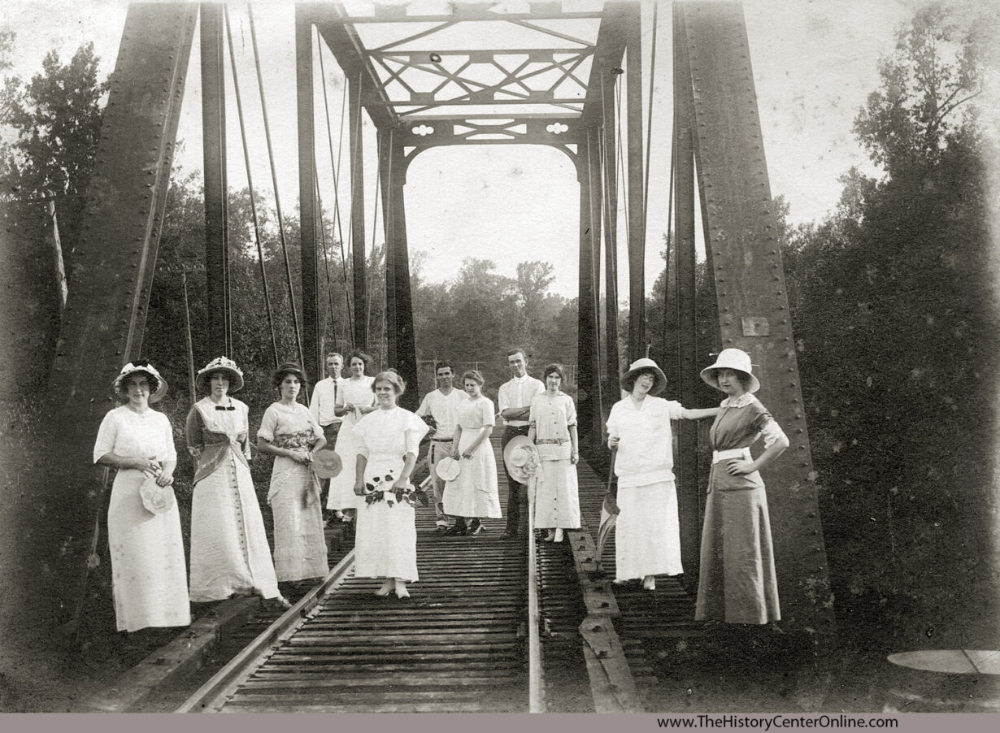
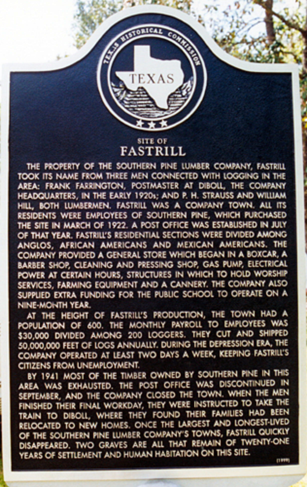
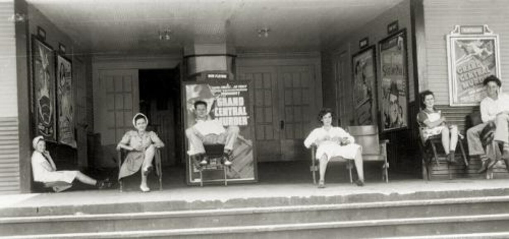

Find something
Start here
The best way in, whether you have two minutes or an evening.
 Take the tourDeep East Texas, one photo at a time. Made to watch together on a big screen.
Take the tourDeep East Texas, one photo at a time. Made to watch together on a big screen. Deep East Texas, ring by ringFrom the Caddo mounds to the Big Thicket: the history of Deep East Texas, told one ring at a time, with sources for every fact.
Deep East Texas, ring by ringFrom the Caddo mounds to the Big Thicket: the history of Deep East Texas, told one ring at a time, with sources for every fact.
Share your family's storyStories, recordings, photos, recipes and the old ways of doing things. Help us gather what East Texas families have handed down, so our grandchildren…Our families and people
The people who settled here, built it and looked after it.

Under the black gum tree: an Oak Flat family165 years of one Piney Woods family at Oak Flat near Huntington, from Winnie Graham’s memoir Under the Blackgum Tree, retold in our own words. For family researchers: Angelina County genealogyWhere Angelina County family records are, which books and cemeteries to check, and a searchable list of pioneer families in the 1976 county history.
For family researchers: Angelina County genealogyWhere Angelina County family records are, which books and cemeteries to check, and a searchable list of pioneer families in the 1976 county history.
HuntingtonHuntington, Texas: a railroad town auctioned off in 1900, with a library built to honor its WWII dead. Black heritage in Angelina CountyGeorge Hackney, Square Long, Long Chapel, Dunbar High School and the Black families who built Angelina County.
Black heritage in Angelina CountyGeorge Hackney, Square Long, Long Chapel, Dunbar High School and the Black families who built Angelina County.
Texas heroes and good stewardsLady Bird Johnson, Lance Rosier and the East Texans who saved the Big Thicket: the people who looked after our land and water, with sources.Our history
Courthouses on the move, sawmill towns, and what went under the lake.
 Land of the Little Angel: Angelina County historyFour county seats, a vote against secession, steamboats on the Angelina, schools by the spring and the timber kingdom: Angelina County history…
Land of the Little Angel: Angelina County historyFour county seats, a vote against secession, steamboats on the Angelina, schools by the spring and the timber kingdom: Angelina County history… Piney Woods waysRiding the Ring, party lines, dog-trot houses, cane syrup, shape notes and Piney Woods talk: the everyday ways of Deep East Texas.
Piney Woods waysRiding the Ring, party lines, dog-trot houses, cane syrup, shape notes and Piney Woods talk: the everyday ways of Deep East Texas. Lost to the lakeWhen Sam Rayburn Reservoir filled, whole communities, farms and graves were moved or drowned. This is what the county lost.
Lost to the lakeWhen Sam Rayburn Reservoir filled, whole communities, farms and graves were moved or drowned. This is what the county lost. The Candy Man and the lakeIn August 1973, police dug in the pines near Lake Sam Rayburn for the victims of Houston's Candy Man. One of his victims still has no name.
The Candy Man and the lakeIn August 1973, police dug in the pines near Lake Sam Rayburn for the victims of Houston's Candy Man. One of his victims still has no name.
Who decides the routeRailroads, paper mills and highways remade Angelina County. Here is who made those calls, and how the public was or wasn’t asked.
Library: every source we useEvery report, public record, filing and news story behind the East Texas Legacy Coalition’s work, in one place, with a plain-English note on what…From the land
What the Piney Woods feeds us, and what’s happening this season.
 Recipes from Deep East TexasMayhaw jelly, skillet cornbread, fried catfish, hushpuppies, chicken and dumplings and Nacogdoches wassail: the food of the Piney Woods.
Recipes from Deep East TexasMayhaw jelly, skillet cornbread, fried catfish, hushpuppies, chicken and dumplings and Nacogdoches wassail: the food of the Piney Woods. Wild foods of Deep East TexasMayhaws, muscadines, persimmons, pawpaws, chanterelles and more: the wild foods of the Piney Woods, with the poisonous look-alikes for every one.
Wild foods of Deep East TexasMayhaws, muscadines, persimmons, pawpaws, chanterelles and more: the wild foods of the Piney Woods, with the poisonous look-alikes for every one.
Upcoming events in Deep East TexasFestivals, parades and community gatherings in Lufkin, Nacogdoches and around Deep East Texas, each linked to its source.The water
The records, the maps and the meetings: what’s planned for our aquifer, and where you get a say.
- The water fightThey want the water. We want it in writing. A grassroots coalition out of Angelina County putting the public records behind data centers…
- The water recordFrom a water-powered mill on Mill Creek to Sam Rayburn Reservoir: how Angelina County’s water was used, stored and sold.
- We’ve watched our water drop beforeFor 60 years the Lufkin paper mill was the biggest straw in Angelina County. State reports measured our water dropping nearly 500 feet, and…
- Leave the good water for the peopleLufkin already owns river and lake water it bought for industry in 2009. Data centers can cool with that, or with reused water. Leave the…
- What one big straw does to our waterPick a pumping rate and watch the Carrizo-Wilcox water level drop around a big new well, year by year. Built on the same math the state…
- Seven big projects in Angelina CountyTwo data centers, two gas plants, a solar farm and two battery sites are lined up for Angelina County. What each one is, how big it is, and…
- Where you get a sayThey’ll tell you it’s outside city limits and nobody can stop it. That’s not the whole story. Here’s who decides what in Angelina County…
- They Heard You. Then They Passed It Anyway.The Pineywoods Groundwater Conservation District unanimously passed its rules exactly as written on Nov. 9, 2026, after hours of…
- Mill Creek: sewage, a fish kill and 200,000 gallons of drinking waterIn 2023, sewage spills from a Lufkin lift station caused a fish kill in Mill Creek. The state fined the City $75,000 and let it put the…
- Selling it before they own it: 1606 Corp. and the old Lufkin power plant1606 Corp.’s Oct. 31 deadline to buy the old biomass power plant in North Lufkin has passed, and it was already pitching the site to AI…
- Nov. 18: The Vote on Our WaterWednesday, Nov. 18, 10 AM, Nacogdoches City Hall. East Texas groundwater districts vote on how far our aquifers can drop through 2080.…
- East Texas Industrial Development TrackerEvery East Texas project in ERCOT’s April 2026 grid queue, by county and fuel, from the East Texas Legacy Coalition.
Keep it going
- DonateEvery record on these pages was paid for. Help keep the requests, the maps and the meetings going.